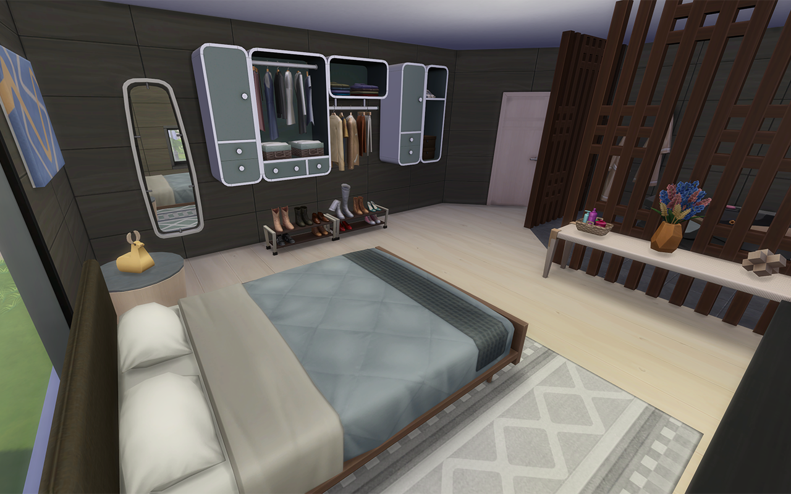
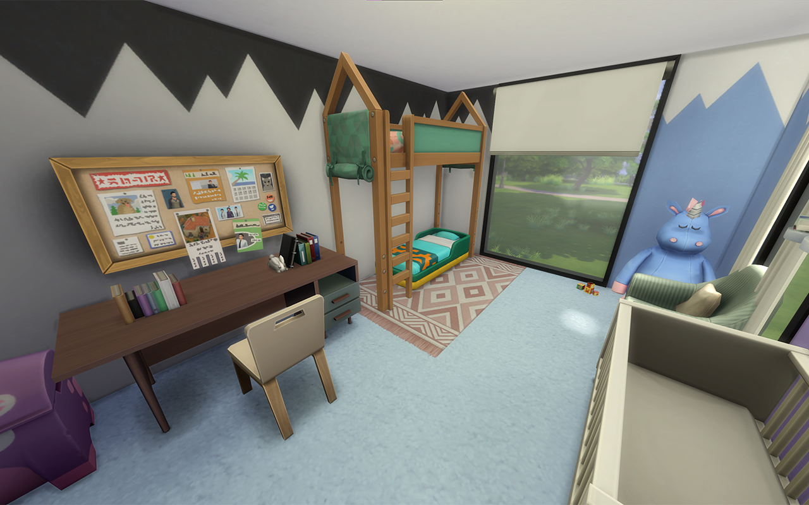
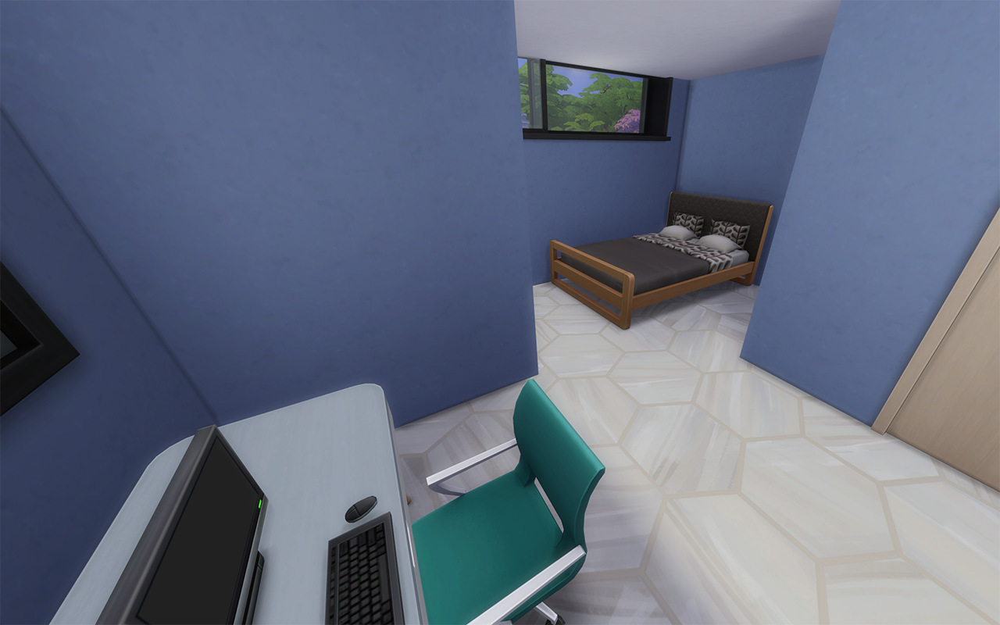
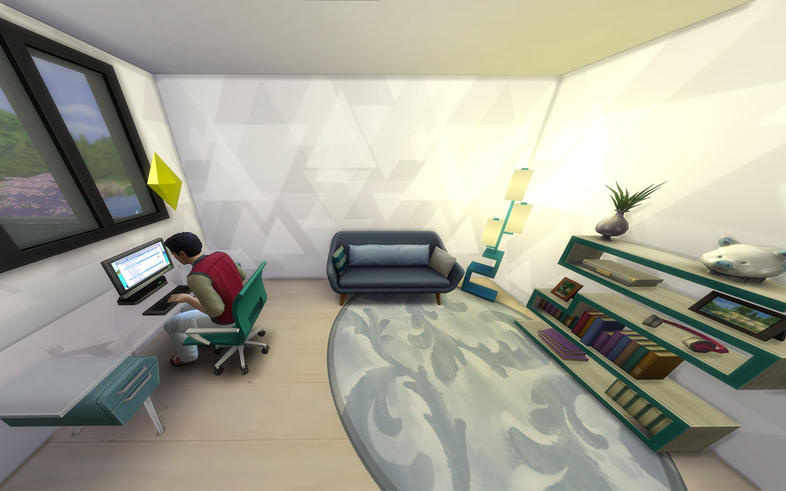
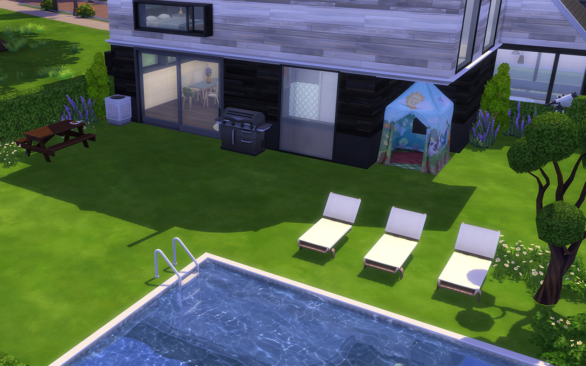
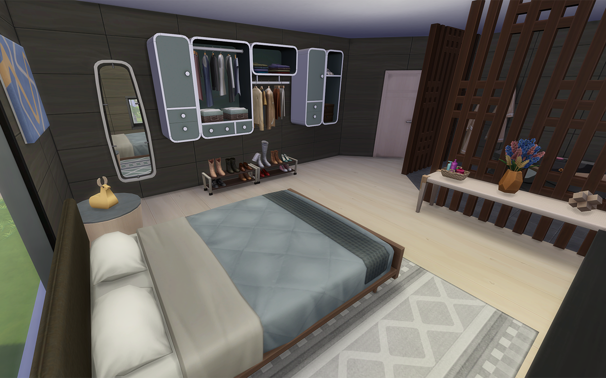
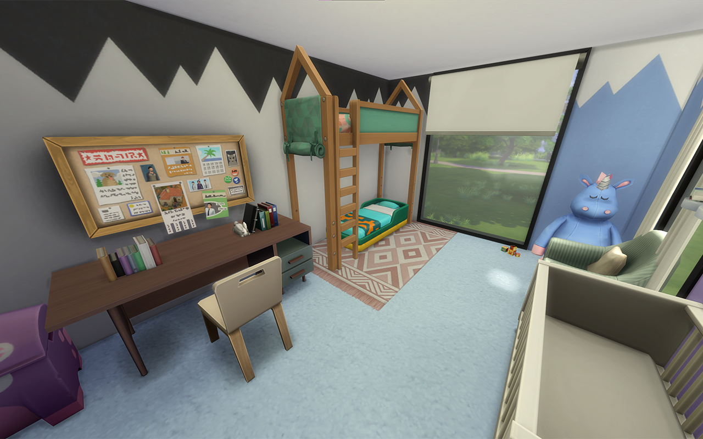
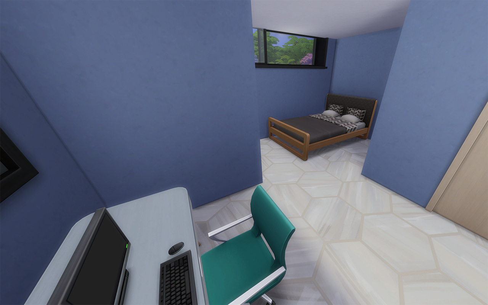
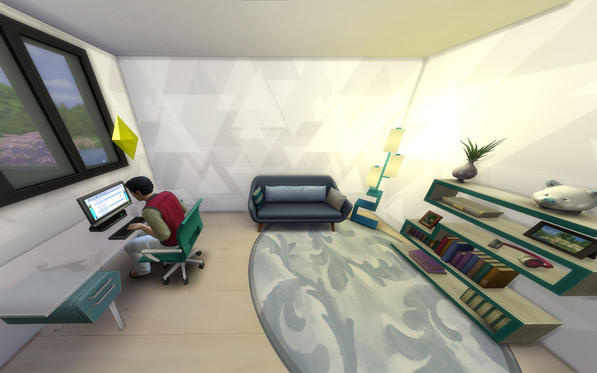
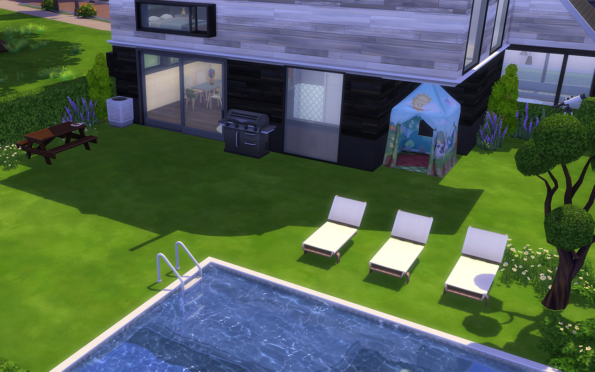

Me apasiona construir y diseñar casas. Y, ya que en la vida real no puedo hacerlo, dado que vivo de alquiler, me he aficionado a los Sims 4, donde puedo crear millones de ideas.
Mis casas
Estas son tres de mis mejores casas, con un poco de variedad. Veremos una tiny house, una casa familiar y una starter house, tanto por fuera como por dentro, aunque se hará más incapié en el diseño de interiores.
Tiny house


En las afueras del pueblo, una tiny house en el bosque es el hogar de una joven que vive sola para estar cerca de su instituto. La pequeña vivienda incluye salón, cocina, baño y habitación, ofreciéndole independencia y un ambiente natural sereno.
Casa familiar
 









En un apacible barrio residencial, una espaciosa casa familiar de tres habitaciones, un despacho, jardín, comedor y cocina ofrece un entorno cómodo y elegante para una familia que valora la comodidad y la vida en comunidad.
Starter house

En un modesto barrio, una starter house con salón, cocina, una habitación y su propio baño es el lugar perfecto para comenzar una nueva aventura. Un espacio sencillo pero acogedor para dar los primeros pasos hacia la independencia.
Mis unidades domésticas
Las unidades domésticas son los personajes que habitan una casa, que en caso de vivir más de un personaje nos encontramos con una familia. El diseño de personajes no es mi fuerte, porqué disfruto más construyendo que roleando, pero alguna he creado especialmente para mis construcciones.
Los Wolf
Los Wolf, una familia apasionada por el diseño y la tecnología, están compuestos por un padre programador, una madre diseñadora de interiores y sus cinco encantadores hijos: un joven, un adolescente, un niño, y dos bebés gemelas. Juntos, crean un hogar lleno de creatividad y amor.
Los Hopkins
Los Hopkins, una familia dedicada a la educación y la ciencia, están formados por un padre biólogo, una madre profesora, y sus tres hijos: dos adolescentes y una niña. Juntos, fomentan el aprendizaje y la curiosidad en un hogar lleno de conocimiento y amor.
Leaf
Renee Leaf, una joven independiente, vive sola y trabaja como diseñadora de ingeniería civil. Con pasión y determinación, da vida a proyectos que transforman el entorno urbano, creando un impacto positivo en su comunidad.